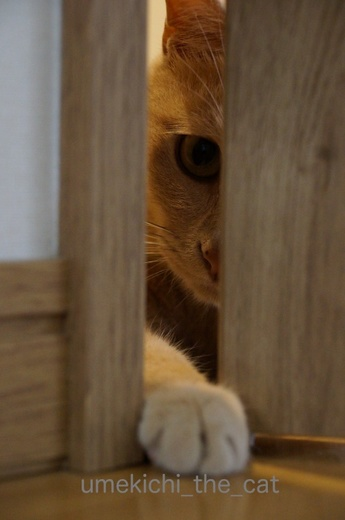
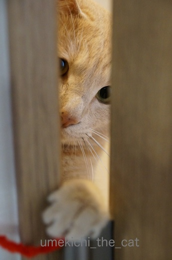
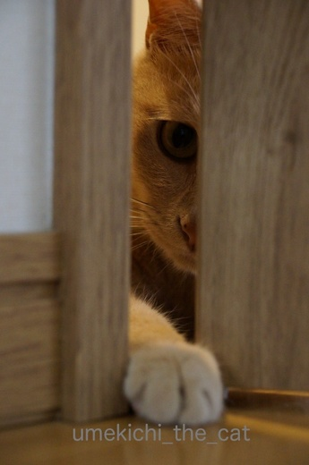
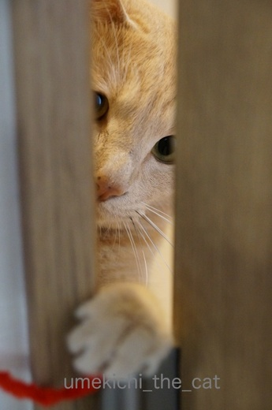

トイレにゆっくり入りたい・・・ [梅吉]
猫飼いの皆さんは夜中、早朝とにゃんこに起こされて
ゆっくり寝ていられない方がほとんどだと思いますが
我が家はゆっくりトイレにも入っていられません( ；∀；)
トイレに入るとドアの外で聞こえる梅吉のぎゃん鳴き。
鳴くぐらいならほっといてもいいじゃない、と思われるかも知れませんが
無視しているとドアにどっかんどっかん飛びついてきます ∞（エンドレス）
こ、壊れる〜
しょうがないので一人の時はドアを開けてトレイに入ってます！
（おお！カミングアウト！！）
で、あまりのうるささにドアを開けてみると影からのぞくカフェオレ・・・・

きゅるんっ

![[猫]](https://blog.ss-blog.jp/_images_e/101.gif) わし、ずっとここにいてたんやで。きづいてた？
わし、ずっとここにいてたんやで。きづいてた？
（あんだけ鳴いたら外の人も気づくわっ![[むかっ（怒り）]](https://blog.ss-blog.jp/_images_e/152.gif) ）
）

なあなあ、なんかおもしろいことしてや

まちくたびれるわ〜

はよう、いうてるやんか〜（ガリガリガリガリ・・・・

おっ！！

これや〜、これをまってたんや〜
モール必携。もちろんいつでも遊んでいただくためです。
一人じゃない時はもちろんトイレのドアは閉めますがその時は梅吉も一緒に中へ。
落ち着かないわ〜。
 ↑ガブッと一押し↑
↑ガブッと一押し↑
先日京都太秦の広隆寺に行ってきました。
もちろん梅吉に酷いことをされていたこの方の本物にお会いするためです。
お詫びもしておかないと！
京都の路面電車、嵐電に乗って太秦広隆寺で下車。
秦氏の住んだ土地なので「蚕ノ社駅」なんて駅名があったりしていかにも！な感じです。
嵐電車内は世界各地からやってきた観光客がたくさん。
広隆寺前で降りた方々は「太秦映画村」へ
その先へ行く方々は「嵐山」がお目当てでしょう＾＾
広隆寺は観光客もまばら。
こんなに素晴らしい弥勒菩薩半跏思惟像をもっと世界の人に見ていただきたい！
安置されている十二神像も保存状態がとっても良く素晴らしいものばかりでした。
ただお堂の中がとっても暗いのです。
作品保存の意味でしょうけれどもう少し明るく出来ないかなぁ・・・
御朱印をいただいで帰りましょうと思ったところで
あ、御朱印帳をわ〜す〜れ〜た〜！！痛恨のミスです。
しょうがないので一枚紙のをいただいてきました。
あ、印刷だ・・・・残念。日付はその場で書いていただけましたが筆ペン・・・
やっぱり黒々と墨で書いていただきたいなぁ。
御朱印帳を忘れた！というのが悪いんですけどね。
先日ネットで話題になっていましたがご存知でしたか？
関西の電車の扉はヒョウ柄なんやで！
おばちゃん心くすぐるわ〜。
ゆっくり寝ていられない方がほとんどだと思いますが
我が家はゆっくりトイレにも入っていられません( ；∀；)
トイレに入るとドアの外で聞こえる梅吉のぎゃん鳴き。
鳴くぐらいならほっといてもいいじゃない、と思われるかも知れませんが
無視しているとドアにどっかんどっかん飛びついてきます ∞（エンドレス）
こ、壊れる〜
しょうがないので一人の時はドアを開けてトレイに入ってます！
（おお！カミングアウト！！）
で、あまりのうるささにドアを開けてみると影からのぞくカフェオレ・・・・

きゅるんっ

（あんだけ鳴いたら外の人も気づくわっ




モール必携。もちろんいつでも遊んでいただくためです。
一人じゃない時はもちろんトイレのドアは閉めますがその時は梅吉も一緒に中へ。
落ち着かないわ〜。
先日京都太秦の広隆寺に行ってきました。
もちろん梅吉に酷いことをされていたこの方の本物にお会いするためです。
お詫びもしておかないと！
京都の路面電車、嵐電に乗って太秦広隆寺で下車。
秦氏の住んだ土地なので「蚕ノ社駅」なんて駅名があったりしていかにも！な感じです。
嵐電車内は世界各地からやってきた観光客がたくさん。
広隆寺前で降りた方々は「太秦映画村」へ
その先へ行く方々は「嵐山」がお目当てでしょう＾＾
広隆寺は観光客もまばら。
こんなに素晴らしい弥勒菩薩半跏思惟像をもっと世界の人に見ていただきたい！
安置されている十二神像も保存状態がとっても良く素晴らしいものばかりでした。
ただお堂の中がとっても暗いのです。
作品保存の意味でしょうけれどもう少し明るく出来ないかなぁ・・・
御朱印をいただいで帰りましょうと思ったところで
あ、御朱印帳をわ〜す〜れ〜た〜！！痛恨のミスです。
しょうがないので一枚紙のをいただいてきました。
あ、印刷だ・・・・残念。日付はその場で書いていただけましたが筆ペン・・・
やっぱり黒々と墨で書いていただきたいなぁ。
御朱印帳を忘れた！というのが悪いんですけどね。
先日ネットで話題になっていましたがご存知でしたか？
関西の電車の扉はヒョウ柄なんやで！
おばちゃん心くすぐるわ〜。

カフェオレ色の梅吉

梅吉 2023年8月10日 永眠


梅吉と出会った譲渡会

犬猫の理由なき殺処分ゼロ
妄想広告
UMEKICHI 光

爆発的に早い！
時々攻撃的！
Thanks to Mr.Boss365
爆発的に早い！
時々攻撃的！
Thanks to Mr.Boss365

うちのかみさんもほぼ同じ目に遭ってるみたいですよぉ(^O^)→あれ？私がばらしちゃまずかったかなｗ
大声で呼んだりはしませんが、ドアの下から猫手を出してウニャウニャ＆ガールズのドア開け作戦で落ち着いてトイレにも入れないと泣いてます^^;
どこのお猫様も本当に甘えッコで^^;
by ニッキー (2017-05-31 14:00)
梅吉さん可愛いね～
ちなみにうちの鳥ちゃんもです(*´Д｀)
放鳥中だとギャンギャン鳴いてます。放鳥していないときは平気ですけどね。
一緒に入りたがるのはペットならではなのかな＾＾
豹柄のドア、これは派手ですね(*´∀｀*)
by muku (2017-05-31 15:01)
うちの場合、猫が元気な頃は寝室のタンスの上からダイブしてました(^^;)
あれには驚きでしたが、たまにご近所の猫も忍び込んでくるので、夜中は本当にびっくりしました(°°)
まあ、猫だからで済んでしまいますけど・・・(^o^)
by kou (2017-05-31 15:04)
うちはナノがトイレについてきます。あわよくば中に入ろうとします。阻止しますが(*^^*)そう言えば最近トイレの前では鳴かなくなったわ！外でウロウロしてるの(^.^)
京都にいらしてたのですね。広隆寺は家から自転車で行ける距離です。
by palpal (2017-05-31 15:56)
私もｓａｒａが小さいころは
トイレの中までついてきたので
トイレのドアは開きっぱなしでした（笑
Ｌｅａはゲートでリビングから
出られないようにしているので
ついて来れませんが(;^_^A
隙間から見える梅吉さん♪
可愛すぎます(#^.^#)
ワクワクしたお顔で構って欲しいのですね！
by きぃ (2017-05-31 19:29)
ぎゃん鳴きして体当たり？
それなのに、こんなしおらしいお顔しちゃって～
可愛い～！甘えたいのね♪
トイレまでついてくる子はいたけど、体当たりまではしなかったかな‥
ドアの下から手が入るので、猫手が一生懸命入ってくるのが可愛かった＾＾
by sana (2017-05-31 20:12)
梅吉さん、甘えん坊さんだ～(*^▽^*)
ウチのも子猫のころは一緒について来ていましたが、柑橘系の消臭剤を置いたら入ってこなくなりました^^;
隙間から見えるお顔や猫手、あ～たまらなく可愛い♪
ドアを挟んで遊ぶとテンション上がりますよね！
by ゆきち (2017-05-31 20:41)
そんなにぎゃんなきしちゃのですか～トイレもゆっくり入れませんね。
でも少し開けても入るでなし、かわいいおててがにょきっとでてきますね。
by みぃにゃん (2017-05-31 21:57)
お手手がカーイイ♪ ^^)
ヒョウ柄模様の扉、派手ですねー。
これにあと「アメちゃん」も用意してあったらいいな。^^;
by yes_hama (2017-05-31 22:03)
梅吉さんはちぃさんのストーカーだったのですね（笑）
トイレはユックリと入りたいでしょうが、甘えた手に免じて許してあげてください。
梅吉さん、健気ですね〜
広隆寺、最後に行ったのは5、6年前です。
大雨にあったような記憶です。
チョット行ってみたくなりました。
電車のドアがヒョウ柄とは気づかなかったわ〜
私、観察力がないなぁ。
by kiki (2017-05-31 22:21)
印刷は残念でしたね〜
さすが、大阪って感じのヒョウ柄にびっくり〜
梅吉先生が暇そうなので、ガブッと！＾＾
by KENT0mg (2017-06-01 08:32)
あれ？？
ガブッとできませんでした。(^^;)
by KENT0mg (2017-06-01 08:34)
ああ～、ただただ、可愛い♡
by Ginger (2017-06-01 13:41)
同じでした。ドカーンって体当たりしてましたよ〜。
大人になってきて｢すぐ出てくる｣ということがわかったらしく
体当たりまではしなくなりました。
ドアの下から新聞をチョロチョロさせると喜びます(^^;
そうそう！電車の内装に乗るたびいちいち驚きでした。
伊丹からの南海電車の木目を皮切りに。
by も〜 (2017-06-01 14:12)
一日の中で一番ゆっくりしたい場所で
梅吉君は意地悪してるんですか～(笑)
これじゃあ抱っこして入るしかありませんね～(*∩ω∩*)プッ!
我が家の裏のお宅のニャンコちゃんが
真夜中になると他のニャンコとケンカしてるようで
ギャ～ギャ～啼き続けるので目が覚めて仕方がありません・・(^^
アンティーチョークのレシピを検索してみましたが
私には食べる勇気が湧かないかもです(*∩ω∩*)
by makkun (2017-06-01 15:28)
梅吉さんたら、いやん！！
大阪のおばちゃん的にはヒョウ柄じゃなくて、ヒョウ顔らしいですよね？
そのうち電車の入口にも顔が採用されるかもね！
by じゅらまろ (2017-06-01 16:29)
カフェオレちゃんの 隙間から覗いた おてて お顔 めちゃめちゃ可愛い![[わーい（嬉しい顔）]](https://blog.ss-blog.jp/_images_e/140.gif)
可愛すぎるわ?
by チャー (2017-06-01 21:48)
相変わらず甘えん坊の梅吉さんですね！
ドアの隙間からのぞくお顔…可愛すぎる～(≧∇≦)
ハナもトイレに入ると付いてきて、ドアの下の隙間からお手手がちょいちょいと出てきますよ。子猫の頃は膝の上に乗ってました…これ、落ち着きませんよね（笑）
by ミミハナ (2017-06-02 08:16)
あ、うちももちろんトイレ同伴ですよー(笑)
最近は、もういいやーって思ってるので、
「トイレ行くよ」って声をかけると、どっちかはついてきますｗ
小のときは、もちろん滞在時間も短いけど
それでもトイレで用を足しながらナデナデｗｗ
便器の周りをぐるぐるまわったりするので、すみずみまで掃除する習慣がついたから、良しとするか・・・^^;
御朱印帳忘れ、残念でしたね；；
by リュカ (2017-06-02 10:27)
ニッキーさん＞ゴッドマザー様も落ち着いてトイレにいられない方！
わぁいヾ(*ΦωΦ)ﾉ仲間〜、仲間〜ww
梅吉の場合一緒にトイレに入ってドアを閉めると
「わし、そとにでるー！」と騒ぎ、外に出してあげると
「いれるにゃー！！」とまた騒ぎ・・・・どっちやねんデス^^;
mukuさん＞鳥ちゃんも一緒にトイレに入りたがるのですかー！
お母さんの姿が見えないと不安になっちゃうのでしょうか。
くーーーーっ(≧▽≦)かわいい子！！
梅吉は、不安になるというより私が中で一人
楽しいことでもしているんじゃないかと
気になってしょうがないって感じです＾＾
kouさん＞タンス上からダイブ、衝撃が凄そうです(･◇･)
絶対目が覚めちゃいますねww
夜中にお家の中で飼い猫以外のにゃんこに会うのも相当びっくり！！
kouさんのお家、油断できませんね(≧艸≦*)
palpalさん＞トイレについてくるのがきなこちゃんだったら
素早くすり抜けて中に入っちゃいそうなんですが・・・
ナノくんは・・・阻止されちゃうんだ^^;
京都に行った日、31度近くになった日で暑かったわ〜。
美味しい坦々麺食べてビールぐいぐい飲んで来ました＾＾
今度はちゃんと御朱印帳を持って木島神社にも行きたいわ！
きぃさん＞トイレのドアが開きっぱなしww
開放感があって良いですね〜Ｏ(≧▽≦)Ｏ
きぃさんといつも一緒に居たかったのね・・・・Leaちゃん。
いつも動き回っているおかーさんがじっとしている＝
構ってもらえる、と思っているのかなぁ。
トイレを遊び場所だと思っている梅吉です^^;
sanaさん＞そうなんですよ〜！
ギャンギャン鳴いていたくせにドアを開けるとしれ〜っと
「なんかあったん？」みたいな顔します^^;
一生懸命入ってくる猫手(≧▽≦)
構ってあげたくなっちゃいますよね〜！！
by ちぃ (2017-06-02 16:16)
ゆきちさん＞はい！大の甘えん坊で〜す＾＾
ただ、側にいたいという健気な理由ではなく
中で何してる気になってしょうがないという感じです^^;
一緒の中に入ると「わし、そとにでる〜！」
外に出してあげると「わし、なかにはいる〜！」ドア、ばしーん！！
本当に落ち着いて入られません。
でもこれがないと寂しいのですよ（ｺｯｿﾘ・・・＾＾
みぃにゃんさん＞ギャンギャン鳴いていたのに「入るの？」と
ドアを開けると素直に入って来ない・・・
入るとすぐ「そとにでる〜」とまた騒ぐ^^;
かわいいから許せる様なものですよ〜ww
yes_hamaさん＞にょきにょき出てくるおてて一瞬握ると
ものすごーくびっくりして引っ込めるんですよ＾＾
「アメちゃん」私がちゃんと持ち歩いてます(≧艸≦*)たべるー？ww
kikiさん＞毎日ストーキングされていますが出るのはうれしい悲鳴のみ！
つきまとって来ないと探しに行っちゃいますから
梅吉にとっては「どっちがすとーかやねん・・・」と言いたいかも^^;
電車は阪急電車でしたよ〜。kikiさんが利用されない路線かも(･◇･)
KENT1mgさん＞ガブっとアイコンつけるの忘れてました〜(꒦ິ⌑꒦ີ)
素知らぬ顔でサクッと直しておきました〜＾＾
教えいていただいてありがとうございます♪
Gingerさん＞のぞいている顔って可愛いですよね〜。
「しつっこいわ〜」というべきところ
「あら、いたですか〜＾＾」とニヤニヤしながら遊んでしまいます(≧▽≦)
も〜さん＞ゆづ王子が体当たり！？
ご幼少時から「早く出てくる様に」とお命じになるんだと思ってました(≧▽≦)
南海の木目ww
電車内の中吊り広告もなかなかのインパクトがあったのではないでしょうか(≧艸≦*)
makkunさん＞おかーさんがゆっくりしている＝遊んでくれる
とインプットされているのかもしれません〜。
抱っこ・・・これがまた暴れるんですわww
じゅらまろさん＞じゃあ、電車の開閉扉があんぐり開いたお口になる日も
近いかも知れません＾＾
チャーさん＞不思議なもので「覗く」と可愛さ倍増！！になる様な気がします。
お目目が黒目がちになるのがポイントかしら・・・(^o^)
ミミハナさん＞そうなの〜、もうすぐ２ちゃいですがいまだ甘えん坊。
人間年齢であてはめると22〜24くらいみたいですが・・・
マザコン社会人？^^;
膝に乗ってくる・・・わ〜最高落ち着かない＆爪たてられたら痛い！！
リュカさん＞おお、トイレ先輩＾＾
トイレの床で寝そべってのび〜っとかするから
私もちゃんと掃除する様になりましたww
梅吉は手洗いタンクの水が出てくるのが大好きなのよ〜。
油断してたらあたりはびしょびしょ・・・
そしてまた拭く羽目になるからトイレお掃除頻度高いかも(^o^)
by ちぃ (2017-06-02 21:00)
梅吉君、必死ですね。
おかーさん、そんなとこで1人で何してるにゃー入れてにゃー
モールで遊びつつ入るトイレ…トイレって落ち着く場所かと思ってましたが、ちぃさんにとっては家の中で1番落ち着かない場所ですね´д` ;
まぁそこまでして甘えてくれる梅吉君が、またひときわ可愛い、となるのが猫にやられた猫飼いの定めですな。可愛いですにゃฅˆ•ﻌ•ˆฅ♬
by BillK-ko (2017-06-02 21:58)
いや〜(^_^; ウチは、もお、トイレのドアも常時、開けてあります。。
もちろんフル開放ではないですが･･･ 猫様のアタマ分ぐらいは･･･
たまにトイレのマットで寝るのも、お好みのようだし。。
梅吉さんも、幸せなお陽さま色のマイペース野郎ですにゃ♡
by のらん (2017-06-03 07:45)
BillK-koさん＞よし！寝てるな！！と思ってトイレに行ったらドアの外から
カリカリカリカリ引っ掻く音が^^;
梅吉が遊びたい気分絶好調の時にも行きにくい
寝ているの邪魔するのもかわいそうだから行きにくい
もお、ほんとそんなこと考えるだけでも落ち着かないわ〜(◎_◎)
で、BillK-koさんは４にゃんさん引き連れておトイレかしら(≧艸≦*)
のらんさん＞のらんさんちのトイレのドアはいつも開いていると・・・_φ(･_･
トイレマット、バスマットは二大お気に入りマットですよねww
猫ベッドにひいちゃおうかしら〜。
by ちぃ (2017-06-04 08:47)